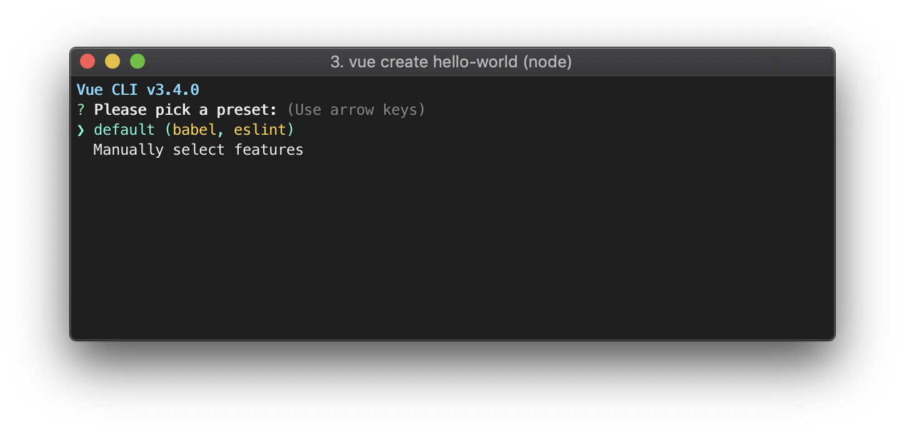

为什么要写这个
Vue的创始人是中国人，中文教程非常全面，其他的一些教程基本都是直接搬的Vue中文教程，但是为什么我还要多此一举写这个呢？原因在于中文教程对于初学者不友好，很多“万事开头难”的内容都没有明确说到，容易把新手直接卡在入口处（比如如何在页面中加入一个用vue控制的元素，或者如何建立一个初始的vue模板工程）。这篇文章就是明确这些内容。
在前端页面中使用的Vue
重要的第一步
作为js库存在的vue很好理解，它就是一个像jQuery一样用于改变页面元素的工具，把页面上一个元素的id或者class放入到new Vue()中进行初始化是在页面上引入vue的第一步。比如：
1 | <div id="app"> |
接下来的操作就只是在上面的div和下面的script加加东西的事了。Vue就只是一个操作页面元素的方式。理解了这个下面就可以直接看教程了。
组件相关的操作
在上面那个操作完成后，下面就可以无障碍边做边学官方教程了。学着学着就会学到组件部分。组件也很简单，不就是一个把一个组件名和组件活动的定义传给Vue.component()然后像用原生HTML标签一样在受vue控制的内容中写标签嘛，比如：
1 | <script> |
把组件的使用方法理解了，后面向组件传值、局部注册和动态组件之类的各种操作也就好学了。
但是，局部注册讲着讲着突然来一个
…如果你通过 Babel 和 webpack 使用 ES2015 模块…
然后后面讲到相关内容的时候都直接默认读者熟悉Babel和webpack了，把在Babel和webpack用的内容和在前端用的内容混在一起讲，然后每一个前面都直接加一句“如果你熟悉Babel和webpack”之内的话了事。我TM…真当读者都是前端高手吗，前端高手还会仔细看这么详细的教程？
Vue发展到今天，已经不是一个简单的前端js库了，它已经和各种前端工具结合而有了更多的功能。尤其是与babel、webpack等静态页面构建工具的结合让vue的模块化更加方便，结构也更加清晰。但是，在前端使用vue和在打包工具里面使用vue的方法有很多相似点，也有很大不同。像中文教程这种给新手看的东西，不应该是把作为前端js库用的vue和在babel、webpack这种打包工具里面用的vue分开来写么？？？不是吗？不是吗？
在打包工具中使用的Vue
打包工具是什么
想不到吧，真正的菜鸡要从打包工具是什么开始学
哈哈哈哈哈哈哈哈哈哈哈哈哈嗝
当前端项目越做越大了之后，什么东西都往<script></script>里面扔的开发方法绝对让你死无葬身之地。但是在js里面又没有很好的方法能把一个js文件切成几块以级联方式导入，最多切几块然后在html里面多弄几个<script></script>标签，但是这样互相之间的全局变量又容易互相干扰。这可咋整？这个时候就是打包工具出场的时候了！
打包工具就是让用户用一种比html更先进的、模块化更好的网页设计语言编写网页，然后用一个统一的工具给转码成html+js。这样就能完成上面说的那种模块化编写网页的方式。并且，这样不止可以让js模块化，连html和css都可以给宁拆喽。打包工具的出现让网页开发进入了新的时代，后面出来的vue自然也要跟进步伐。
vue用的什么打包工具
Pug、Babel (with ES2015 modules)、Stylus、webpack都可以用。现有的网页打包工具基本都是基于node.js的，虽然都是js，但是node.js和前端里面的js还是不一样的，要注意不要弄混。node.js最明显的一点是，因为它不用放在各种浏览器里面用，所以跟进js标准特别及时，更新到上面说的ES2015 modules那里就直接原生支持import和export这种导入了。
vue默认的打包工具是Babel，用默认配置还会给你附赠一套eslint在打包的时候顺便给宁把代码格式化一下。
怎么打包
基于node.js的打包工具，第一步当然是装node.js了，这就不说了。
装好node.js之后就是在node.js里面装一些vue相关的工具了：
1 | npm install @vue/cli |
- 创建工程-在要创建工程的地方打这个：
1 | vue create hello-world |
创建的时候会让用户选一个打包工具：

如上图，babel和eslint就是默认设置。
工程建好了，结合中文教程中单文件组件部分的内容，进各个文件夹里面看看就能懂个大概，再看教程里面穿插的那些vue打包用法就不难理解了。
最后，打包和运行也很简单
调试运行
1 | vue serve |
打包发布
1 | vue build |